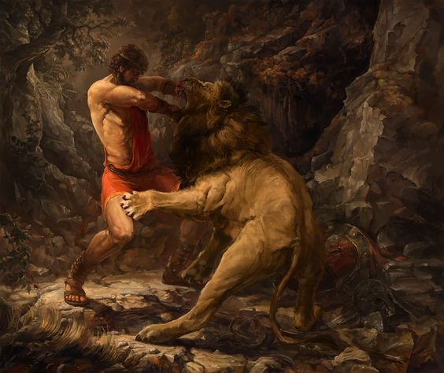
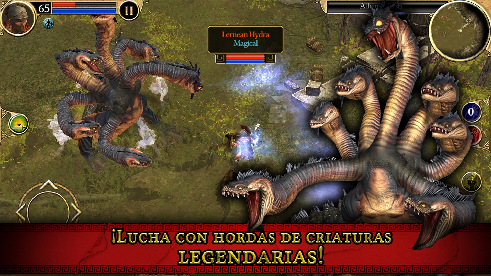

A fondo
Las Doce Pruebas
En "Las Doce Pruebas" te meterás de cabeza bajo la piel del héroe de la mitología griega Hércules mientras sigues su historia de tragedia, arrepentimiento, realización y ascenso a leyenda.
El juego se desarrollará en un escenario compartido entre la realidad arcaica griega y la mitología. Un recorrido que nos hará conocer la historia de la Antigua Grecia, sus mitos y leyendas, aquellos que dieron lugar a una poderosa civilización de grandes guerreros, reyes y políticos, pensadores y filósofos, en la cuna donde nació el germen de la Democracia.

Vive tus propias historias recorriendo por tierra y mar una de las culturas mas sobresalientes de nuestra civilización. Explora grandes ciudades y disfruta de escenas míticas al enfrentarte en los distintos niveles a cada una de las tereas encomendadas por el Oráculo de Delfos.
Adquiere la sabiduría y la fuerza necesaria para superar las Doce Pruebas con la ayuda de tu fiel acompañante y sobrino de Hércules, Yolao.
Con cada prueba superada tendrás más destreza con de tus habilidades de Semidiós, aumentando así el número de tus seguidores y el favor de los dioses que, de forma más o menos directa, te fortalecerán en cuerpo y alma.
Enfrétate a los retos de la manera más eficaz posible, ya sea con la fuerza bruta y más elemental de tus puños, blandiendo imponentes armas pesadas que destrozarían a cualquier mortal con tan solo intentar lenvantarlas, o con tu ingenio para descifrar complejos acertijos.
Adéntrate aún más en la mitología y las tareas de Hércules con los DLCs Aventuras Relacionadas; historias independientes donde se conocerán más a fondo a los personajes y criaturas protagonistas de algunas de las Doce Pruebas, además de conocer otros nuevos.
Disfruta de una épica e inmersiva banda sonora original tocada en piano, cada una de ellas exclusiva a cada situacion del juego, ya séan en momentos de alta tensión luchando contra las criaturas míticas, a más relajantes resolviendo acertijos. Os dejamos una pequeña muestra de lo que os encontraréis en el juego.